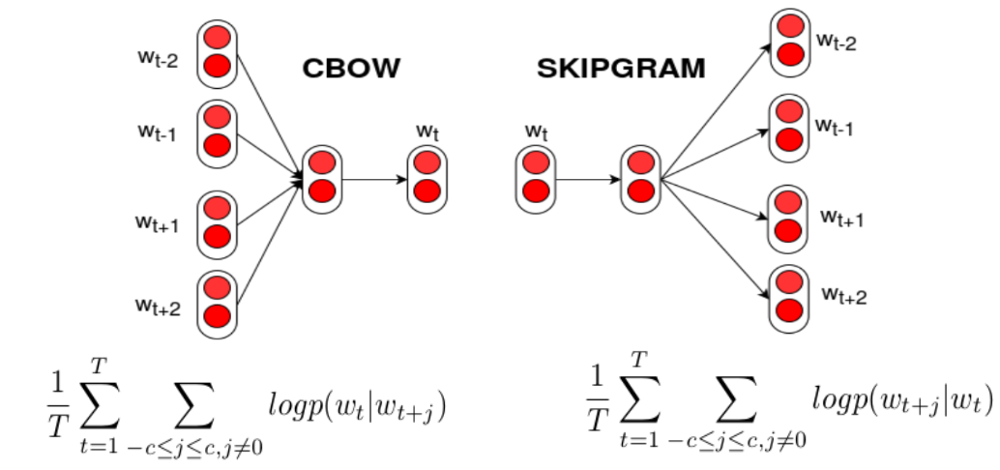
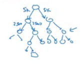
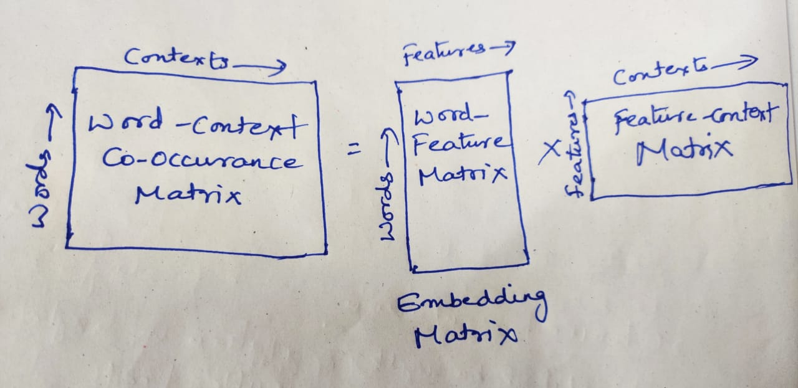

20 Text Representation & Word Embeddings
20.1 Sparse Text Representations
20.1.1 Bag-of-Words and Term Frequency
The bag-of-words (BoW) model represents a document as an unordered multiset of its words, discarding grammar and word order. Despite its simplicity, it remains effective for tasks like spam detection or topic classification.
In its basic form, BoW represents a document \(d\) as a vector of term frequencies: \[\text{tf}(t,d) = f_{t,d}\] where \(f_{t,d}\) is the raw count of term \(t\) in document \(d\). For example, in “the cat sat on the mat”, \(\text{tf}(\text{the}, d) = 2\) and \(\text{tf}(\text{cat}, d) = 1\).
This representation is biased: frequent function words (the, and) dominate the vector even though they carry little semantic information.
20.1.2 TF-IDF
The term frequency–inverse document frequency (TF-IDF) scheme corrects for this by down-weighting terms that are common across the whole corpus: \[w_{t,d} = \text{tf}(t,d) \cdot \underbrace{\log\frac{N}{n_t}}_{\text{idf}(t)}\] where \(N\) is the total number of documents and \(n_t\) is the number of documents containing \(t\). A term that occurs frequently in \(d\) but rarely elsewhere gets a high weight.
TF-IDF vectors can be used directly for retrieval: embed the query as a TF-IDF vector and retrieve documents with the highest cosine similarity to precomputed corpus vectors.
20.1.3 BM25
TF-IDF still assumes each additional occurrence of a term contributes linearly to relevance — but intuitively, the first occurrence of a query term is far more informative than its tenth. BM25 addresses this with a saturating transform of term frequency plus document-length normalization: \[\boxed{w_{t,d} = \text{idf}(t) \cdot \frac{f_{t,d}\,(k+1)}{f_{t,d} + k\left(1 - b + b\,\dfrac{|d|}{\text{avgdl}}\right)}}\] where \(|d|\) is the document length, \(\text{avgdl}\) the average document length across the corpus, and \(k, b\) are hyperparameters (commonly \(k \approx 1.2\), \(b \approx 0.75\)). The weight grows with \(f_{t,d}\) but saturates quickly (diminishing returns per extra occurrence), while long documents are penalized relative to short ones to avoid favoring verbosity. To score a document against a query, sum \(w_{t,d}\) over all query terms \(t\).
Interview Insight: “Why does BM25 outperform raw TF-IDF for search?” Two reasons: (1) the saturating \(f_{t,d}/(f_{t,d}+k(\cdots))\) term means a word appearing 10 times isn’t 10× as relevant as one appearing once — it caps out — making the score robust to keyword stuffing; (2) length normalization prevents long documents from accumulating higher scores purely by containing more words. BM25 remains the default lexical (sparse) scorer in modern hybrid search systems, where it is combined with dense vector retrieval.
Despite these refinements, BoW, TF-IDF, and BM25 all treat words as independent, mutually orthogonal dimensions — car and automobile share no signal even though they are near-synonyms. Capturing such relationships requires moving from sparse counts to dense word embeddings.
20.2 Word Embeddings
A vocabulary can be represented with one-hot vectors, but these are high-dimensional and encode no semantic similarity — any two distinct words are equally (maximally) far apart. Dense, low-dimensional embeddings (e.g., \(d=512\)) instead place semantically related words close together in a continuous space. Two classic approaches for learning such embeddings from a corpus are Word2Vec (a predictive, local-context model) and GloVe (a count-based, global-statistics model).
20.2.1 Word2Vec
Word2Vec trains a shallow (two-layer) feedforward network on word co-occurrence within a sliding context window, under one of two objectives:

CBOW (Continuous Bag of Words) predicts the target word \(t\) from its context \(C\). Let \(v_C\) be the average of the input embeddings of the context words, and \(u_w\) the output embedding of word \(w\): \[P(t \mid C) = \frac{\exp(u_t^\top v_C)}{\sum_{w \in V} \exp(u_w^\top v_C)}\]
Skip-gram uses the target word \(t\) to predict each surrounding context word \(c\) independently: \[P(c \mid t) = \frac{\exp(u_c^\top v_t)}{\sum_{w \in V} \exp(u_w^\top v_t)}\]
Both are trained by maximizing the average log-probability of the (target, context) pairs observed in a sliding window of radius \(c\) over the corpus. Skip-gram produces more training pairs per pass and tends to do better on rare words; CBOW trains faster and tends to do better on frequent words.
20.2.1.1 Efficient Softmax Computation
Both objectives require a softmax over the entire vocabulary \(V\) — for \(|V| \approx 100{,}000\), computing \(\sum_{w\in V}\exp(\cdot)\) at every step is prohibitive. Two approximations are used in practice:
Hierarchical Softmax arranges the vocabulary as leaves of a binary (Huffman) tree, with internal nodes acting as binary classifiers — common words near the root, rare words deeper. This replaces one \(|V|\)-way classification with \(O(\log_2 |V|)\) binary classifications.

| Standard Softmax | Hierarchical Softmax | |
|---|---|---|
| Computation for \(\lvert V\rvert = 100{,}000\) | \(O(\lvert V\rvert) \approx 100{,}000\) | \(O(\log_2 \lvert V\rvert) \approx 17\) |
Leaf nodes have no embeddings of their own — only the internal-node classifier weights are learned. The word embedding for a target word remains the standard input-layer vector fed into the tree.
Negative Sampling avoids the tree entirely. For each observed (target, context) pair \((w, c)\), sample \(K\) “negative” words \(w_1,\dots,w_K\) from a noise distribution \(P_n\) (typically unigram frequency raised to the \(3/4\) power), and train binary logistic classifiers to separate the true pair from the negatives: \[\boxed{\mathcal{L}_{\text{NEG}} = -\log\sigma\!\left(u_c^\top v_w\right) - \sum_{k=1}^{K} \mathbb{E}_{w_k \sim P_n}\left[\log\sigma\!\left(-u_c^\top v_{w_k}\right)\right]}\] All classifiers share a single output weight matrix (one column per vocabulary word); at each step, only the columns for the true context word and the \(K\) negatives are updated, alongside the input embedding \(v_w\). This gives the model access to \(|V|\) potential classifiers while keeping per-step computation constant (\(O(K)\), typically \(K \in [5, 20]\)).
Interview Insight: At inference / downstream use, the hidden-layer activations — i.e., the input embeddings \(v_w\) — are taken as the word embeddings; the output matrix \(u\) is discarded (or occasionally averaged with \(v\)).
20.2.2 GloVe
GloVe (Global Vectors) instead starts from a global word–context co-occurrence matrix \(X\), where \(X_{ij}\) counts how often word \(j\) appears in the context window of word \(i\), aggregated over the whole corpus. GloVe then factorizes this matrix into low-dimensional word (\(w_i\)) and context (\(\tilde w_j\)) vectors:

\[\boxed{J = \sum_{i,j=1}^{V} f(X_{ij})\left(w_i^\top \tilde w_j + b_i + \tilde b_j - \log X_{ij}\right)^2}\] \[f(x) = \begin{cases} (x / x_{\max})^{\alpha} & x < x_{\max} \\ 1 & \text{otherwise} \end{cases} \qquad (x_{\max}=100,\ \alpha = 3/4)\]
- Weighting \(f(X_{ij})\): extremely rare co-occurrences are noisy, so \(f\) scales them down for \(x < x_{\max}\); extremely frequent pairs (e.g. “the”, “a”) are capped at weight \(1\) rather than being allowed to dominate further.
- The \(\log X_{ij}\) term serves two purposes: (1) raw co-occurrence counts span orders of magnitude (Zipf’s law), and the log compresses this range so rare and frequent pairs can be fit in the same embedding space; (2) it is the ratios of co-occurrence probabilities — not the raw probabilities — that carry semantic information (e.g., the relationship between “king” and “queen” is captured by how their co-occurrence with “man” vs. “woman” ratios compare). Taking logs turns these ratios into additive differences, which is exactly the structure dot-product embeddings can represent — giving rise to linear analogies like “king” − “man” + “woman” ≈ “queen”.
Interview Insight: Word2Vec (skip-gram with negative sampling) and GloVe look algorithmically different — one is a neural predictive model, the other an explicit matrix factorization — but Levy & Goldberg (2014) showed skip-gram with negative sampling implicitly factorizes a shifted PMI (pointwise mutual information) matrix. Both methods are, at their core, low-rank factorizations of a word co-occurrence statistic.
20.3 Properties and Uses of Word Embeddings
20.3.1 Semantic Similarity and Analogy Reasoning
In a well-trained embedding space, words with similar meanings map to nearby points — clusters visible via dimensionality-reduction techniques like t-SNE. Beyond proximity, embeddings support analogy reasoning: given a similarity metric (cosine similarity or Euclidean distance), the vector closest to \[e_{\text{king}} - e_{\text{man}} + e_{\text{woman}}\] is typically \(e_{\text{queen}}\). Such relationships correspond to (approximate) parallelograms in the embedding space — a direct consequence of the additive, ratio-based structure discussed above.
20.3.2 Bias and Debiasing
Word embeddings inherit the biases present in their training corpus. A canonical example is gender bias: the embedding space exhibits analogies like [Father : Doctor] :: [Mother : Nurse]. To mitigate this:
- Identify the bias direction — e.g., average the difference vectors (man − woman), (boy − girl), etc., to obtain a “gender direction” \(g\).
- Neutralize: for words that should be gender-neutral (e.g., “doctor”, “nurse”), project out the component along \(g\), placing them on the hyperplane orthogonal to \(g\).
- Equalize: for word pairs that should differ only by gender (e.g., “father”/“mother”), move them to be equidistant from that hyperplane — by projecting their midpoint onto it and reflecting each word symmetrically around it.
20.3.3 Bag-of-Words Classifier
A simple but often-effective baseline for tasks like sentiment classification: sum (or average) the word embeddings of a sentence into a single vector, and train a logistic-regression or softmax head on top — the bag-of-words classifier. It discards word order entirely. To model order and context, these embeddings instead become the input to sequence models — RNNs, LSTMs, GRUs, and Transformers — covered in the next chapter.
20.4 Interview Questions
Q: Why does BM25 generally outperform raw TF-IDF for lexical search?
TF-IDF weights grow linearly with term frequency, so a document that repeats a query term many times (even artificially) scores proportionally higher. BM25 applies a saturating transform \(\frac{f_{t,d}(k+1)}{f_{t,d}+k(\cdots)}\) so additional occurrences contribute diminishing returns, and normalizes by document length relative to the corpus average, so long documents don’t win purely by being long. This makes BM25 more robust and is why it remains the standard sparse-retrieval baseline, often combined with dense embeddings in hybrid search.
Q: Why can’t Word2Vec train with a plain softmax over the vocabulary, and what are the two standard fixes?
The softmax denominator \(\sum_{w \in V}\exp(u_w^\top v)\) requires a full pass over the vocabulary (\(O(|V|)\), e.g. ~100K) at every training step — for both the forward pass and the gradient update of every output vector. Hierarchical softmax restructures the output layer as a binary tree, reducing this to \(O(\log_2 |V|)\) binary decisions. Negative sampling instead reframes training as binary classification: distinguish the true (target, context) pair from \(K\) randomly sampled negative pairs, updating only \(O(K)\) output vectors per step.
Q: CBOW vs. Skip-gram — what’s the practical trade-off?
CBOW averages all context word embeddings into a single vector to predict the center word — faster to train (one prediction per window) and tends to work well for frequent words, since averaging smooths out noise. Skip-gram predicts each context word individually from the center word — more training examples per window (one per context position), which gives rare words more gradient signal, generally improving embeddings for infrequent vocabulary at the cost of more compute.
Q: How are Word2Vec and GloVe related, despite looking like different algorithms?
GloVe is explicitly a (weighted, biased) low-rank factorization of the log co-occurrence matrix. Word2Vec’s skip-gram with negative sampling appears to be a neural predictive model, but Levy & Goldberg (2014) showed it implicitly factorizes a shifted pointwise mutual information (PMI) matrix. Both methods ultimately produce embeddings whose dot products approximate a (shifted, transformed) co-occurrence statistic — the difference is mainly in optimization (online SGD over local windows vs. direct factorization of global counts).
Q: Why do word embeddings support linear analogy arithmetic (e.g., king − man + woman ≈ queen)?
Both GloVe’s objective and the PMI matrix that Word2Vec implicitly factorizes are built on log co-occurrence statistics. The semantic relationship between two words is carried by the ratio of their co-occurrence probabilities with other “probe” words — and taking logs converts ratios into differences. Embedding dot products (and the resulting vector geometry) therefore encode these log-ratio differences additively, which is precisely the structure that makes vector offsets between analogous pairs (e.g., king−man and queen−woman) align.
Q: How would you debias a gender-stereotyped analogy like [father : doctor] :: [mother : nurse] in an embedding space?
First estimate a “gender direction” \(g\) by averaging difference vectors of known gendered pairs (man−woman, he−she, boy−girl, …). Then, for words that should be gender-neutral (doctor, nurse, engineer), neutralize by projecting out their component along \(g\) — placing them on the hyperplane orthogonal to \(g\). For words that legitimately encode gender (father/mother, actor/actress), equalize by repositioning the pair symmetrically around that hyperplane, so they differ only along \(g\) and are equidistant from all neutral words.